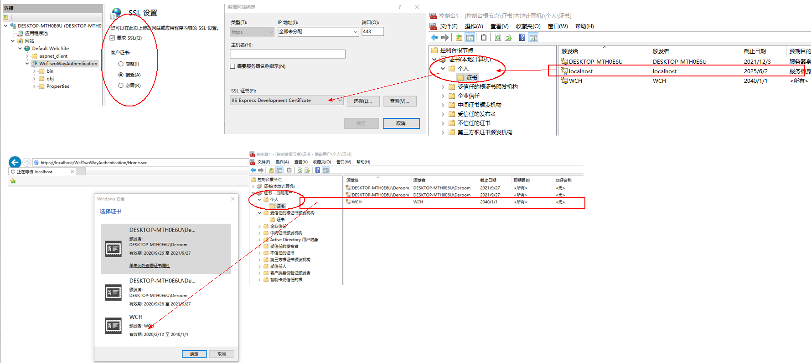

1、寄宿在IIS，IIS进行配置，指定服务端证书，并且SSL设置中，要求客户端证书，然后浏览器所在机器安装服务端证书的公钥，IIS服务器所在机器安装客户端公钥，最终达到互相验证身份，使用场景有：服务端之间的进行调用时进行身份认证，并且加密传输的数据
2、SelfHost的wcf服务，配置文件中指定服务端要使用的证书，同时配置客户端，总体思路和寄宿在IIS中一致
单向认证，双向认证的简化版，使用场景：普通的https网站，都是单向认证，浏览器通过证书确认服务器的身份，服务器的公钥通过根证书CA已经预置在浏览器所在电脑了
服务端：IIS的https绑定使用IISExpress的证书，地址使用localhost；客户端的证书WCH加入到受信任的根证书机构；应用程序池使用LocalSystem账号；IISExpress证书给客户端；IIS的SSL设置为要求SSL，接受 客户端：创建证书WCH，放在本机-个人；把WCH给服务端； 把IISExpress的证书加入到受信任的根证书颁发机构；WCH证书密码：123456 配置使用IIS，所以使用管理员账号打开项目 这样就达到互相验证身份，并且用对方的公钥加密数据后发送给对方，接受到数据用私钥解密。 调试的时候需要附加到w3wp
寄宿iis的双向认证wcf，必须显式终结点，否则报错【无法激活请求的服务“https://localhost/WcfTwoWayAuthentication/Home.svc”】
web站点、wcf、asmx等等，如果寄宿在IIS，则双向验证本身的逻辑都是IIS和请求端自动完成，服务端的业务代码不用参与认证的逻辑。客户端请求使用到的证书就行了。在浏览器上，会自动弹出证书选择列表
WCH.pfx的密码为123456
双向认证的iis配置
